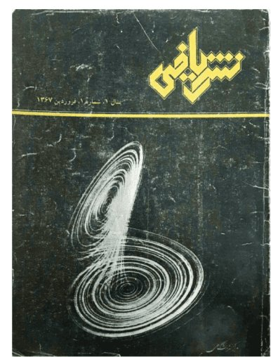

The Mathematics of Chaos
The opening article of the very first issue of Nashr-e Riyāzi (April 1988): from dynamical systems and their attractors to Lorenz's strange attractor — republished with figures that are alive. Slide the parameter and cross the bifurcations yourself.
The text is the 1988 text, word for word. The figures are not copies: they have been conceptually re-created from the mathematics itself — some as fresh drawings, some as live experiments.
In recent years the subject of chaos in dynamical systems has become one of the most important problems of pure mathematics, of applied mathematics, and of various branches of the natural sciences — so much so that it has turned into one of the broadest research areas of the present time. By a dynamical system we mean, in general, the set of possible states of a phenomenon together with a law of evolution which describes the passage from one state to another. If the state of the system is given at some particular time, this law determines the states of the system at all later times.
If the past states of the system can also be recovered from the law of evolution without ambiguity, the dynamical system is called reversible. In this article our discussion will be confined to reversible systems. In simple language, a chaotic dynamical system may be defined as one whose dynamical law is completely deterministic, with no probabilistic ingredient whatsoever, and yet whose long-term behaviour is in practice unpredictable.
More precisely, in such systems an inaccuracy in our knowledge of the initial state, however small (and such inaccuracy is, practically speaking, unavoidable), leads to gross error in predicting the state of the system over the long term. Chaos therefore appears, on the face of it, to contradict the Newtonian view of the laws of nature; for according to classical physics, if we know the equation of motion and the initial condition of a system, we can determine its state at any later time with precision. For example, once the forces acting on a body are specified, the formula \(F = ma\) gives us its acceleration, and hence its position and velocity at every moment, in terms of the initial position and velocity.
As we know, this classical view of physics was pronounced untenable in the first half of the twentieth century with the advent of quantum theory: by Heisenberg's uncertainty principle it is in principle impossible to measure the position and the velocity of a particle precisely at the same instant, so that even the initial state of the system cannot be fixed with certainty.
The study of chaotic dynamical systems in recent years has given the limitations of the Newtonian outlook a new dimension; for in systems of this kind any uncertainty in the initial condition, however negligible — whether it stems from Heisenberg's principle, from experimental error, or from the shortcomings of our mathematical model — acquires, in the long run, such vast proportions that the state of the system becomes unpredictable.
From the study of chaos, then, comes this important conclusion: the criterion for the soundness of a theory of a dynamical system cannot be the precise prediction of its behaviour; rather, the probabilistic and geometric properties that follow from the theory are what must be examined and assessed.
In this article we shall describe, in outline, the principal features of one example of a chaotic dynamical system; but first we examine a few simple examples of non-chaotic systems, and use them to define some of the notions we shall need.
A few examples of non-chaotic systems
The examples we present here are all dynamical systems defined by a differential equation or a system of differential equations. Systems that evolve continuously in time are usually governed by a system of ordinary differential equations. This means that once the state of the system at some instant is known, its future (and past) evolution is determined by following the solution of the system of differential equations passing through that initial state.
Example 1. Consider the homogeneous linear first-order differential equation
Here \(\mathbf{R}\), the set of real numbers — the domain of \(x\) — is called the state space of the dynamical system. If at time \(t=0\) we have \(x = x_0\), then \(x(t) = x_0 e^{-\lambda t}\). We also write this last relation in the form
In other words, \(\varphi_t(x_0)\) specifies the value of \(x\) at time \(t\), given that its value at \(t=0\) was \(x_0\). To interpret the differential equation qualitatively and geometrically, we regard \(f(x) = -\lambda x\) as a vector field on \(\mathbf{R}\). Figure 1, obtained by drawing this vector field, is called the phase portrait of the dynamical system. A few remarks:
- Every solution \(\varphi_t(x_0) = x_0 e^{-\lambda t}\), regardless of the initial condition (that is, of the value of \(x_0\)), tends to zero. We call \(0\) the attractor of this dynamical system, and \(\mathbf{R}\) its basin of attraction. In general, a point of the state space is called an attractor of the system if it attracts all points of some neighbourhood of itself; and the set of all points attracted to it is called its basin of attraction. (To say that a point \(p\) is attracted means that the solution of the differential equation passing through \(p\) tends to the attractor in positive time.)
- From Figure 2 we see at once that if there is some uncertainty in the initial condition — that is, if \(x(0)\) is not \(x_0\) itself but lies in some neighbourhood \(u\) of the point \(x_0\) — then this uncertainty shrinks as time passes: the length of \(\varphi_t(u)\) for \(t>0\) is less than the length of \(u\), and indeed the length of \(\varphi_t(u)\) tends to zero as \(t \to \infty\).
- If we perturb the vector field slightly and smoothly — that is, consider the system \(dx/dt = f(x) = -\lambda x + O(x^2)\), \(\lambda>0\), where \(O(x^2)\) stands for an arbitrary function tending to zero faster than \(x\) as \(x \to 0\) — it can be shown that the qualitative behaviour of the solutions near zero does not change: in a neighbourhood of zero all points still tend to zero. We say the original system is structurally stable at zero, or that its attractor is structurally stable.
- If \(\lambda = 0\), every point is fixed: \(\varphi_t(x_0) = x_0\) for all \(x_0\) and \(t\) in \(\mathbf{R}\). And if \(\lambda < 0\), the phase portrait is as in Figure 3 and points move away from zero. In this case we call the point zero a repeller.
Example 2.
Here the state space is \(\mathbf{R}^2\), and we have \(\varphi_t(x_0, y_0) = \left( x_0 e^{-\lambda t},\, y_0 e^{-\mu t} \right)\). The phase portrait is as in Figure 4. Note the following:
- The origin, zero, is the attractor of the system, with basin of attraction \(\mathbf{R}^2\).
- Any uncertainty in the initial condition shrinks with the passage of time; in other words, if \(u\) is a neighbourhood of \((x_0, y_0)\) in \(\mathbf{R}^2\), then for \(t>0\) the size of \(\varphi_t(u)\) is smaller than the size of \(u\).
- The system is structurally stable at zero.
- If \(\lambda < \mu < 0\), the solution curves move away from zero, and zero is a repeller (Figure 5).
Example 3.
The phase portrait is as in Figure 6. The \(x\)- and \(y\)-axes are invariant. Points on the \(x\)-axis approach zero, and points on the \(y\)-axis move away from it. The point zero is here called a saddle point. As in the two previous examples, small smooth perturbations of the vector field do not change the qualitative behaviour of the solutions near zero. The \(x\)-axis — the set of points that tend to zero as \(t \to \infty\) — we call the inset of the point zero; the \(y\)-axis — the set of points that tend to zero as \(t \to -\infty\) — its outset. Notice that here the inset and the outset are each one-dimensional, whereas in Examples 1 and 2 the insets were one- and two-dimensional respectively and the outsets were empty.
Remark. In the three examples above we examined the behaviour of the solutions of a differential equation near a fixed point. In general, if we have a vector field on \(\mathbf{R}^n\) with zero as a fixed point — that is,
where \(\mathbf{x} \in \mathbf{R}^n\), \(\mathbf{f}\) is a vector field on \(\mathbf{R}^n\) and \(T\) is the linear part of \(\mathbf{f}\) — and if the eigenvalues of \(T\) all have non-zero real part, then the point zero has an \(i\)-dimensional inset and an \((n-i)\)-dimensional outset, where \(i\) is the number of eigenvalues of \(T\) with negative real part. For instance, if we have
then the eigenvalues of \(T\) are \(-1 \pm i\) and \(1\). Here zero has a two-dimensional inset and a one-dimensional outset. Near the point zero the phase portrait of the system is, topologically, as in Figure 7.
Example 4.
where \(\varepsilon\) is a real parameter. Here we have an example of a bifurcation in a parametrised dynamical system. The phase portraits for negative, zero and positive \(\varepsilon\) are as in Figure 8.
We observe that as \(\varepsilon\) passes through zero, the phase portrait of the system changes qualitatively. For \(\varepsilon \le 0\) the system has one attractor whose basin is \(\mathbf{R}\), whereas for \(\varepsilon > 0\) there are three fixed points: zero, which is a repeller; \(\sqrt{\varepsilon}\), an attractor whose basin is \(\mathbf{R}^{+}\); and \(-\sqrt{\varepsilon}\), an attractor whose basin is \(\mathbf{R}^{-}\) (the negative reals). The point zero separates the basins of the two attractors from one another, and for this reason we call zero a separator. If we plot the fixed points of the parametrised system against the \(\varepsilon\)-axis, we obtain Figure 9, which resembles a fork; for this reason this bifurcation (and bifurcations which are locally of the same qualitative kind) is called a pitchfork bifurcation.
Example 5. Consider the following dynamical system, expressed in polar coordinates:
Here \(r=0\), the origin, is an attractor, and the circles \(r=1\) and \(r=2\) are both solutions of the system. It is easy to see that \(r=2\) is a closed orbit which attracts all orbits of the region \(r>1\). Here \(r=2\) is an example of a non-point attractor, which we call a limit cycle; its basin of attraction is \(r>1\). The circle \(r=1\), on the other hand, is a repelling closed orbit: all orbits with \(r>1\) or \(r<1\) move away from it (Figure 10).
Example 6. In polar coordinates:
where \(\varepsilon\) is a real parameter. Here too we have a bifurcation, known as the Hopf bifurcation. For \(\varepsilon < 0\), \(r = \sqrt{-\varepsilon}\) is a repelling closed orbit and \(r=0\) is a point attractor. As \(\varepsilon\) reaches zero, the repelling orbit merges into the point attractor, so that for \(\varepsilon \ge 0\) zero becomes a repelling point (Figure 11).
If we reverse time in the system above — that is, consider the vector field \(dr/dt = -r(\varepsilon + r^2)\), \(d\theta/dt = -1\) — then for \(\varepsilon < 0\) we obtain, in place of a repelling closed orbit, an attracting limit cycle.
From all this we conclude that the most important problem in the qualitative study of differential equations is to determine the attractors of the equation; for orbits lying in the basins of the attractors rapidly approach them as time passes, and in practice soon become indistinguishable from the attractor itself. Physically speaking, it is only the attractors of a system that can actually be observed. The question that now arises is whether attractors exist of a kind other than the point attractors and limit cycles seen in the previous examples — by which we mean an attractor that cannot be decomposed into point attractors and limit cycles. One further kind has in fact long been known: the quasi-periodic attractor, an example of which appears in the "irrational flow" on the torus. Following Figure 12, picture the two-dimensional torus as a square whose opposite sides are identified in pairs. Now consider the vector field
on the square, where \(w_2 / w_1\) is an irrational number. A little reflection shows that the orbit of every point is then dense on the torus. And it is easy to imagine a vector field on \(\mathbf{R}^3\) whose orbits are all attracted to a torus, with the orbits on the torus behaving as just described (Figure 13).
Lorenz's strange attractor

Until the early nineteen-sixties it was supposed that every attractor could be decomposed into attractors of the three kinds we have now seen. It was then that the American mathematician Smale (S. Smale) produced the first example of a strange attractor: an attractor of intricate shape, around and within which the behaviour of the system's solutions was tangled and, for practical purposes, unpredictable. Still, this example remained within the realm of mathematical theory, and it was not imagined that such a phenomenon could be observed in systems governed by the laws of classical physics. But in 1963 an American mathematician and meteorologist named Lorenz (E. N. Lorenz) published a paper in which, for the first time, an attractor of the new kind arose in a natural problem. Searching for a mathematical model to explain atmospheric turbulence in meteorology, he considered the following differential equations:
where \((x,y,z) \in \mathbf{R}^3\) and \(R\), \(b\) and \(\sigma\) are real parameters. Lorenz examined the values \(\sigma = 10\) and \(b = 8/3\), and showed that for every positive value of \(R\) there exists a simply connected region \(M\) in \(\mathbf{R}^3\), containing the origin, such that on the whole boundary of \(M\) the vector field \((*)\) points inward (Figure 14).
It follows that \(M\) must contain an attractor (or several attractors); indeed \(A = \bigcap_{t>0} \varphi_t(M)\) is the attractor (or attractors) in question. On the other hand the divergence of the vector field \((*)\) is negative, and it is easy to show that the volume of any piece of the state space shrinks as time passes — in fact the volume tends to zero (in mathematical language, the limiting position of the piece is a set of measure zero).
Now, to determine the attractor (or attractors) contained in \(M\), we increase the parameter \(R\) from \(R=0\) up to \(R=28\), and describe in outline the changing character of the system's phase portrait across this range of values of \(R\) — the range Lorenz studied.
First we find the fixed points of the field. Clearly \(x = y = z = 0\) — the origin — is always a fixed point. From the equations \((*)\) we readily obtain the linear part of the vector field at the point \(O\):
The eigenvalues of \(T\) are therefore \(-b\) together with the roots of the equation
When \(R < 1\) the other two eigenvalues are both negative, and consequently \(O\) is an attractor; whereas when \(R > 1\) one of them is positive and the other negative — that is, \(O\) is a saddle point with a two-dimensional inset and a one-dimensional outset. (Note that \(\sigma = 10\) and \(b = 8/3\) are both constant and positive.)
On the other hand, for \(R > 1\) the vector field \((*)\) also vanishes at two further points, whose coordinates are
We call these two points \(C_{\pm}\). By examining the linear part of the vector field at these two points one can show that for values of \(R\) slightly greater than \(1\), the linear part at both points has three negative eigenvalues, so both are attractors.
Notice that as \(R \to 1^{+}\) we have \(C_{\pm} \to O\): at \(R = 1\) the two attracting points \(C_{\pm}\) are born out of \(O\). Indeed at \(R=1\) a bifurcation takes place at the point \(O\) which, along a curve through \(O\) whose tangent direction is the one in which the two new fixed points \(C_{\pm}\) emerge, is of the pitchfork type of Example 4. This curve is called the centre manifold; transverse to it there is contraction (Figure 15).
Having examined the local bifurcation at \(R=1\), let us describe the phase portrait for \(R<1\) and for \(R\) slightly greater than \(1\). For \(R<1\) the vector field has a single attracting fixed point at \(O\), which attracts every orbit entering \(M\) (Figure 16). For \(R\) slightly greater than \(1\) we have the two attracting points \(C_{\pm}\) and a saddle fixed point at \(O\) with two-dimensional inset and one-dimensional outset. Here the two-dimensional inset of \(O\) divides \(M\) into two invariant regions: \(M_{+}\), containing \(C_{+}\), and \(M_{-}\), containing \(C_{-}\); every orbit in \(M_{+}\) is attracted to \(C_{+}\), and every orbit in \(M_{-}\) to \(C_{-}\). The inset of \(O\) — which for \(R\) slightly greater than one is very nearly a rather flat two-dimensional sheet — is thus the separator of the basins of \(C_{+}\) and \(C_{-}\) (Figure 17).
As we raise \(R\) from \(R=1\), the points \(C_{\pm}\) move further and further from \(O\), and the inset of \(O\) grows increasingly curved, until at \(R \approx 13.92\) the inset of \(O\) strikes the outset of \(O\) (in fact the outset comes to lie inside the inset). Here a complicated bifurcation takes place which, unlike the bifurcations we have seen so far, is not a local bifurcation occurring in the neighbourhood of a point, but a global one. The study of these two bifurcations lies outside the scope of this article. We note only that immediately after these two bifurcations the phase portrait still has the two attractors \(C_{+}\) and \(C_{-}\), and the inset of \(O\) still separates their basins of attraction; but on account of the two recent bifurcations this inset winds around itself in a peculiar way in the vicinity of \(C_{+}\) and \(C_{-}\), so that, for instance, an orbit lying in \(M_{+}\) may wind several times around \(C_{-}\), close by it, before finally tending to \(C_{+}\).
When \(R\) increases still further, at \(R = R_h \approx 24.74\) a Hopf bifurcation of the kind met in Example 6 occurs at each of the fixed points \(C_{+}\) and \(C_{-}\): at each of these fixed points, on a two-dimensional manifold (the centre manifold), a Hopf-type bifurcation takes place, while transverse to this two-dimensional manifold at the fixed point there is contraction (Figure 18). Consequently, for \(R\) slightly greater than \(R_h\), the points \(C_{+}\) and \(C_{-}\) are saddle fixed points, each with a one-dimensional inset and a two-dimensional outset.
But we said earlier that \(M\) must contain an attractor. The question now is this: given that for \(R\) slightly greater than \(R_h\) none of the points \(O\), \(C_{+}\), \(C_{-}\) is an attractor, what kind of attractor does \(M\) contain? Using methods of numerical approximation and computer simulation, Lorenz showed that all orbits in \(M\) are attracted to a complicated, indecomposable set, an approximate picture of which appears in Figure 19 — the live figure above, at \(R=28\).
The Lorenz attractor, as that picture shows, has the form of a two-sheeted surface, each of whose sheets has a hole at its centre; one hole surrounds the fixed point \(C_{+}\), the other \(C_{-}\). The Lorenz attractor is thus a strange attractor, resembling none of the three kinds of attractor we met before.
If we follow the path of an arbitrary orbit in \(M\) by computer, we find that the orbit rapidly approaches the Lorenz attractor and thereafter traces a wholly irregular, unpredictable route: it circles, say, several times around \(C_{+}\) on its sheet, then changes course onto the other sheet and winds an apparently indeterminate number of times around \(C_{-}\), then returns again to the sheet of \(C_{+}\) — and so on forever.
How can we account for this behaviour?! First note that the one-dimensional outset of \(O\) forms the boundary of the attractor (Figure 19). Moreover each apparent sheet of the attractor, around \(C_{+}\) and \(C_{-}\), lies close to the outset of those points. Consequently, when an arbitrary orbit in \(M\) finds itself near the sheet of \(C_{+}\), it is carried by the outset of \(C_{+}\) around that point several times, each turn taking it further from \(C_{+}\), until on its last turn it has moved so far out that it leaves the region of influence of that outset, falls under the influence of the orbit issuing from \(O\) (which forms one half of the outset of \(O\)), and is guided towards \(C_{-}\). There, drawn near by the inset of \(C_{-}\), it now circles \(C_{-}\) several times and repeats around \(C_{-}\) the very process it had performed around \(C_{+}\). Thus the orbit perpetually jumps, after some number of turns around one sheet, across to the other (Figure 19).
Now take two very close points of \(M\) and compare the paths of their orbits — the two orbits in the live figure above. For a while the two orbits stay close together and wind around a sheet in company; but since, while circling a sheet, their separation is gradually amplified under the outset of \(C_{+}\) or \(C_{-}\), there comes a moment when their paths part: one continues to circle its previous sheet while the other crosses over to the opposite one.
The crucial point is that however small the initial separation of the two orbits, in time their paths will part. Hence if there is the least ambiguity in the initial condition, the long-term behaviour of the system becomes unpredictable. Indeed, take any small piece of the state space: after circling the sheets for a while, this piece suddenly and quite unexpectedly decomposes into two pieces, each circling one of the sheets; after a further while each piece decomposes again, and the process continues indefinitely, until in time the original piece has been divided into a very large number of fragments spread more or less uniformly over the whole attractor. Physically this means that however negligible the error in the initial condition, with the passage of time the state of the system may, with equal probability, be at any point of the strange attractor!
One further matter deserves attention. If we alter the value of \(R\) slightly, complicated bifurcations take place in the system; and although the overall structure of the strange attractor does not change, the topology of the orbits on the attractor does. In other words the Lorenz attractor is not structurally stable in the conventional sense of the term, even though across a whole range of values of \(R\) the system exhibits broadly similar behaviour. More than anything else, this exposes the inadequacy of the notion of structural stability for the study of strange attractors. Indeed, despite wide-ranging research into strange attractors in differential equations and in discrete systems alike, no suitable theoretical framework yet exists for understanding and analysing them — and the effort to build one will surely be among the most fruitful fields of mathematical activity in the years to come.
References
- Abraham R., & Shaw C., Dynamics: The Geometry of Behavior, Aerial Press, Santa Cruz, CA, 1982.
- Devaney R., An Introduction to Chaotic Dynamical Systems, Benjamin/Cummings, Menlo Park, CA, 1986.
- Guckenheimer J., & Holmes P., Nonlinear Oscillations, Dynamical Systems, and Bifurcations of Vector Fields, Springer-Verlag, New York, 1983.
- Hao Bao-Lin, Chaos, World Scientific, Singapore, 1984.
- Ruelle D., "Strange attractors", Math. Intelligencer, 2 (1980) 126–137.
- Ruelle D., "Differentiable dynamical systems and the problem of turbulence", Bull. Am. Math. Soc., 5 (1981) 29–42.
- Smale S., The Mathematics of Time, Springer-Verlag, New York, 1980.
- Sparrow C., The Lorenz Equations: Bifurcations, Chaos, and Strange Attractors, Springer-Verlag, New York, 1982.